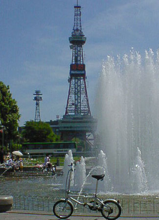
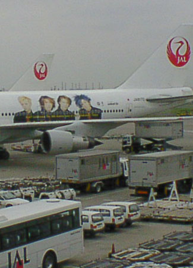
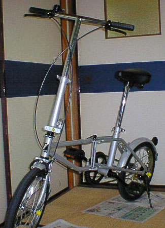

| ７月１３日 | 旅行最終日、帰ってきました。めちゃめちゃ疲れました。 雨降ってるし、荷物重いし、羽田からのバスが渋滞で普段の倍くらいの時間かかるし・・・ とりあえずむこうでの写真を一枚載せておきます。 |
 |
| ７月１２日 | 旅行３日目、北広島。 | とりあえずなし。 |
| ７月１１日 | 旅行２日目、めちゃめちゃ晴れた！ | とりあえずなし。 |
| ７月１０日 | 旅行初日、ＧＬＡＹジャンボで出発！！ |  |
| ７月９日 | 明日の昼に本土とおさらば！ | はやねはやおき |
| ７月８日 | いまだ出発の準備が全くできていない。 デジカメのフル活用方法も勉強不足である。急に準備をすると何か忘れそうなんですよね。 例えば缶詰を持っていったのはいいんだけれど缶切りを忘れた、のような。 |
貼りたいんだけど なかなか・・・ |
| ７月７日 | 今日は何もしていません。 来週の日、月の札幌の天気がちょっと心配。 |
今日はたなぼた |
| ７月６日 | 現在残された問題はどうやって自転車を現地まで運ぶか。 最初は現地まで宅急便などで送ろうと思ったがどうやらハードケースに入れてあるか、または 梱包しなければならないらしい。前者は不可能、後者はかなり面倒くさいので却下。 自転車用の袋に入っていれば飛行機には載せられるみたいなので空港まで運ぶしかないみたい。 バスor電車からモノレールのどちらか。バスに決定！！ |
写真取る暇がない |
| ７月５日 | １１日、１２日の宿をキープ。 １０日の分は先週とったんですが全然あいていなく１５，６件目にやっととることができました。 土曜日だからかなー。 |
写真なし |
| ７月４日 | 先週購入した折りたたみ自転車の試し乗りをした。 あまりスピードは出なかったが歩くより全然よい。これでいろんなところを走れることでしょう。 ちなみにこんな自転車です。−−−−−−−−−−−−−−−−−−−−−−−−−−ーー−＞ |
 |